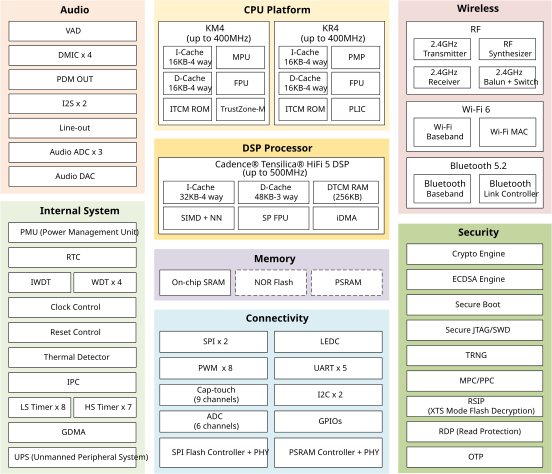
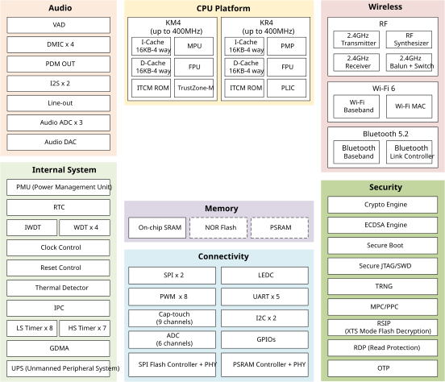
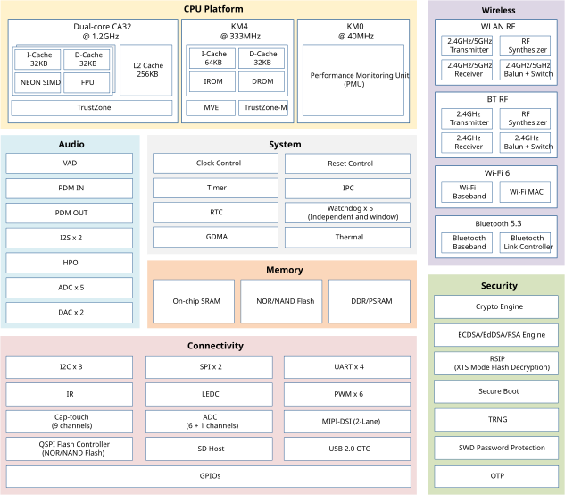

产品概述
Introduction
This SoC is a low-power dual-band microcontroller integrating a high-performance MCU (Armv8.1-M, Cortex-M55 instruction set compatible) called Real-M300 and a low-power MCU (Armv8-M, Cortex-M23 instruction set compatible) called Real-M200. It is designed to achieve enhanced power and RF performance and low-power consumption, featuring all the characteristics of low-power chips, such as fine-grained clock gating, multiple power modes, and dynamic power scaling.
The Real-M300 (or KM4 thereafter), acting as application processor (AP), is a 3-staged pipelined 32-bit high-performance processor that bases on Armv8.1-M mainline architecture supporting Arm Cortex-M55 instruction set compatible, running at a frequency of up to 345MHz. It offers system enhancements such as enhanced debug features, floating-point computation, Digital Signal Processing (DSP) extension instructions, and a high level of support block integration for high-performance, deeply embedded applications. The TrustZone-M security technology provides hardware-enforced isolation between the Trusted and Non-Trusted resources on the devices, while maintaining efficient exception handling and determinism.
The Real-M200 (or KM0 thereafter), acting as network processor (NP), is a 2-staged pipelined 32-bit low-power processor that bases on Armv8-M baseline architecture supporting Cortex-M23 instruction set compatible, running at a frequency of up to 115MHz. It is an energy-efficient and easy-to-use processor with a simple instruction set and reduced code size, and is code- and tool-compatible with the KM4 processor. It is intended for operations requiring fast response and low power consumption features, such as power management and network protocol processing.
This SoC is a dual-band (2.4GHz and 5GHz) communication controller that integrates the specifications of Wi-Fi (Wi-Fi 4) and Bluetooth (BLE 5.0). It supports 802.11 a/b/g/n wireless LAN (WLAN) network with 40MHz bandwidth. It consists of WLAN MAC, a 1T1R capable WLAN baseband, RF, and Bluetooth, providing complete Wi-Fi and Bluetooth functionalities.
A variety of peripheral interfaces, including UART, SPI, QSPI/OSPI, I2C, LEDC, etc., as well as sensor controllers (such as ADC, Cap-Touch, and Key-Scan) are integrated into RTL8721Dx devices. High-speed connectivity interfaces, SDIO and USB, are also provided. Besides, This SoC has audio features with a dedicated digital microphone (DMIC) interface and I2S. Abundant general-purpose I/O (GPIOs) can be configured to different functions according to different IoT (Internet of Things) applications flexibly. The user-friendly development kits (SDK and HDK) are provided to customers for developing applications.
This SoC also incorporates high-speed memories with on-chip SRAM and stacked Flash or PSRAM. A dedicated SPI Flash controller provides a flexible and efficient way to access NOR Flash (e.g., byte and block access). A multilayer AXI bus interconnect supports internal and external memory access.
This SoC family offers devices in different packages ranging from 48 pins to 100 pins. The included peripherals change with the device.
Block Diagram
The functional block diagram is illustrated below, which provides a view of the chip's major functional components and core complexes.

Block diagram
Introduction
This SoC is a low-power single-chip microcontroller integrating dual RISC cores (Arm® Cortex®-M55 compatible instruction set and RISC-V compatible instruction set) and a digital signal processor (Cadence® Tensilica® HiFi 5 DSP). It is designed for optimized power efficiency, RF performance, and reduced audio transmission latency. It also encompasses the characteristics of low-power chip, including fine-grained clock gating, multiple power modes, and dynamic power scaling.
The KM4 (also called Real-M300) is a 3-staged pipelined 32-bit processor that bases on Armv8.1-M architecture supporting Cortex-M55 compatible instruction set, running at a frequency of up to 400MHz. It offers system enhancements such as enhanced debug features, single-precision floating-point unit (FPU), Digital Signal Processing (DSP) extension, TrustZone-M security for hardware-enforced isolation, and a high level of support block integration.
The KR4 is a 32-bit processor that supports RISC-V compatible instruction set RV32IMAFC, running at a frequency of up to 400MHz. RISC-V is a standard free and open instruction set architecture (ISA) based on RISC, delivering a new level of free, extensible software and hardware freedom on architecture.
The Cadence Tensilica HiFi 5 DSP is a high-performance embedded DSP optimized for high-performance front-end, far-field and near-field audio and voice processing, running at a frequency of up to 500MHz. It is also designed for enabling efficient implementations of neural network (NN) based speech recognition algorithms. The HiFi 5 DSP is a five-slot VLIW machine which can execute up to eight 32x32-bit MACs per cycle. It can issue two 128-bit loads per cycle, or one load and one store of 128-bit per cycle for parallel loads and stores of the operand and results. The HiFi 5 DSP offers additional floating-point precision support through an optional Single Precision vector floating-point unit (SP FPU), which can perform up to eight single-precision floating-point MACs per cycle. For supporting neural network-based speech recognition algorithms, the HiFi 5 DSP provides Neural Network Extension option which enables the hardware to perform up to thirty-two 8x16, 4x16 and 8x8-bit MACs per cycle.
This SoC integrates the latest specifications of Wi-Fi (Wi-Fi 6) and Bluetooth (Bluetooth 5.2). It supports 802.11 b/g/n/ax wireless LAN (WLAN) network at 2.4GHz with 20MHz bandwidth. It consists of WLAN MAC, a 1T1R capable WLAN baseband, RF, and Bluetooth, providing complete Wi-Fi and Bluetooth functionalities.
A variety of peripheral interfaces, including UART, SPI, I2C, LEDC, etc., as well as sensor controllers (such as ADC, Cap-Touch, and thermal) are integrated into SoC. Besides, This SoC has rich audio features for smart audio applications with dedicated microphone interfaces (DMIC), built-in voice activity detection (VAD), and I2S. Abundant general-purpose I/O (GPIOs) can be configured to different functions according to different secure IoT (Internet of Things) applications flexibly. The user-friendly development kits (SDK and HDK) are provided to customers for developing applications.
This SoC also incorporates high-speed memories with on-chip SRAM and stacked Flash or PSRAM. A dedicated SPI Flash controller provides a flexible and efficient way to access NOR Flash (e.g., byte and block access). A multilayer AXI bus interconnect supports internal and external memory access.
Block Diagram
The functional block diagram is illustrated below, which provides a view of the chip's major functional components and core complexes.
{kind=link}

Block diagram
Introduction
This SoC is a low-power single-chip microcontroller integrating dual RISC cores (Arm® Cortex®-M55 compatible instruction set and RISC-V compatible instruction set) and a digital signal processor (Cadence® Tensilica® HiFi 5 DSP). It is designed for optimized power efficiency, RF performance, and reduced audio transmission latency. It also encompasses the characteristics of low-power chip, including fine-grained clock gating, multiple power modes, and dynamic power scaling.
The KM4 (also called Real-M300) is a 3-staged pipelined 32-bit processor that bases on Armv8.1-M architecture supporting Cortex-M55 compatible instruction set, running at a frequency of up to 400MHz. It offers system enhancements such as enhanced debug features, single-precision floating-point unit (FPU), Digital Signal Processing (DSP) extension, TrustZone-M security for hardware-enforced isolation, and a high level of support block integration.
The KR4 is a 32-bit processor that supports RISC-V compatible instruction set RV32IMAFC, running at a frequency of up to 400MHz. RISC-V is a standard free and open instruction set architecture (ISA) based on RISC, delivering a new level of free, extensible software and hardware freedom on architecture.
The Cadence Tensilica HiFi 5 DSP is a high-performance embedded DSP optimized for high-performance front-end, far-field and near-field audio and voice processing, running at a frequency of up to 500MHz. It is also designed for enabling efficient implementations of neural network (NN) based speech recognition algorithms. The HiFi 5 DSP is a five-slot VLIW machine which can execute up to eight 32x32-bit MACs per cycle. It can issue two 128-bit loads per cycle, or one load and one store of 128-bit per cycle for parallel loads and stores of the operand and results. The HiFi 5 DSP offers additional floating-point precision support through an optional Single Precision vector floating-point unit (SP FPU), which can perform up to eight single-precision floating-point MACs per cycle. For supporting neural network-based speech recognition algorithms, the HiFi 5 DSP provides Neural Network Extension option which enables the hardware to perform up to thirty-two 8x16, 4x16 and 8x8-bit MACs per cycle.
This SoC integrates the latest specifications of Wi-Fi (Wi-Fi 6) and Bluetooth (Bluetooth 5.2). It supports 802.11 b/g/n/ax wireless LAN (WLAN) network at 2.4GHz with 20MHz bandwidth. It consists of WLAN MAC, a 1T1R capable WLAN baseband, RF, and Bluetooth, providing complete Wi-Fi and Bluetooth functionalities.
A variety of peripheral interfaces, including UART, SPI, I2C, LEDC, etc., as well as sensor controllers (such as ADC, Cap-Touch, and thermal) are integrated into SoC. Besides, This SoC has rich audio features for smart audio applications with dedicated microphone interfaces (DMIC), built-in voice activity detection (VAD), and I2S. Abundant general-purpose I/O (GPIOs) can be configured to different functions according to different secure IoT (Internet of Things) applications flexibly. The user-friendly development kits (SDK and HDK) are provided to customers for developing applications.
This SoC also incorporates high-speed memories with on-chip SRAM and stacked Flash or PSRAM. A dedicated SPI Flash controller provides a flexible and efficient way to access NOR Flash (e.g., byte and block access). A multilayer AXI bus interconnect supports internal and external memory access.
Block Diagram
The functional block diagram is illustrated below, which provides a view of the chip's major functional components and core complexes.
{kind=link}

Block diagram
Introduction
This SoC is a highly integrated multi-core microcontroller based on dual-core Arm® Cortex®-A32 and KM4 (Arm® Cortex®-M55 32-bit compatible instruction set) RISC cores, with independently controlled isolated domains for maximum effectiveness and security. It is designed to achieve the best power and RF performance and ultra-low-power consumption, featuring all the characteristics of low-power chips, such as fine-grained clock gating, multiple power modes, and dynamic power scaling.
The Cortex-A32 (CA32), acting as application processor (AP), is the most power-efficient application processor capable of seamlessly supporting 32-bit code, running at a frequency of up to 1.2GHz. The CA32 processor uses an efficient, 8-stage, in-order pipeline that has been extensively optimized to provide the 32-bit Armv8-A features in the smallest footprint and power. Built-in ARM's TrustZone secures the application codes from malicious attacks. It is an ideal choice for wearables, IoT and rich embedded applications, especially those which require the use of a platform operating system.
The KM4 (also called Real-M300V), acting as network processor (NP), is a 3-staged pipelined 32-bit core that bases on Armv8.1-M architecture supporting Cortex-M55 compatible instruction set, running at a frequency of up to 333MHz. It offers system enhancements such as low power consumption, enhanced debug features, single-precision floating-point unit (FPU), Digital Signal Processing (DSP) extension and M-profile Vector Extension (MVE) instructions, TrustZone-M security for hardware-enforced isolation, and a high level of support block integration.
This SoC is a dual-band (2.4GHz and 5GHz) communication controller that integrates the specifications of Wi-Fi (Wi-Fi 6) and Bluetooth (Bluetooth 5.3). It consists of WLAN (802.11 a/b/g/n/ax) MAC, a 1T1R capable WLAN baseband, RF, Bluetooth and peripherals, providing complete Wi-Fi and Bluetooth functionalities. It is designed with advanced features, enhanced RF performance, reduced audio transmission latency and system power consumption.
A variety of peripheral interfaces, including USB, serial ports, MIPI, LEDC, IR, ADC, etc., as well as sensor controllers (such as ADC, thermal) are integrated into SoC seamlessly. Besides, This SoC has rich audio features for smart audio applications including dedicated microphone interfaces (AMIC/DMIC), built-in voice activity detection (VAD), acoustic echo cancellation (AEC) reference ADC, stereo audio DAC, headphone out (HPO), and I2S. Abundant general-purpose I/O (GPIOs) can be configured to different functions according to different secure IoT (Internet of Things) applications flexibly, especially for intelligent voice interaction applications. The user-friendly development kits (SDK and HDK) are provided to customers for developing applications.
This SoC also incorporates high-speed memories with on-chip SRAM and stacked selectable DRAM (either DDR or PSRAM). A dedicated controller (SPIC) provides a flexible and efficient way to access NOR/NAND Flash (e.g. byte and block access). A multi-layer AXI interconnect support internal and external memories access.
Block Diagram
The functional block diagram is illustrated below, which provides a view of the chip's major functional components and core complexes.
{kind=link}

Block diagram
Note
For different part numbers of SoC series, refer to Products for more details.